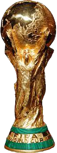
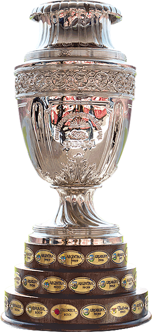
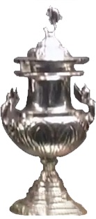

Palmarés de la
Selección Argentina

x3
Copas del mundo. Conseguidas en 1978
(Argentina), de la mano de Mario A. Kempes;
1986 (México), con la mejor actuación individual
en la historia de un mundial, protagonizada
por Diego A. Maradona; y 2022 (Qatar)
con la coronación del mejor jugador argentino
de todos los tiempos, Lionel Messi.

x15
Argentina es la selección con más consagraciones
en esta competición. Al igual que Uruguay, Argentina
posee 15 Copa América. Consiguió coronarse en las
ediciones de 1921, 1925, 1927, 1929, 1937, 1941, 1945,
1946, 1947, 1955, 1957, 1959, 1991, 1993, consiguiendo
la última en 2021, realizando una hazaña histórica al
vencer a Brasil por 1-0 en el Maracaná.

x2
Copa Artemio Franchi, conocida actualmente como
Finalissima o Copa de Campeones Conmebol-Uefa.
Argentina obtuvo su primer título de Finalissima en 1993,
venciendo al campeón de la Eurocopa de ese entonces,
Dinamarca, por penales (5-4).
En 2021, levantó el trofeo por segunda vez, venciendo en
la Finalissima a Italia por 3-0.
x1
La Copa Rey Fahd, actualmente conocida como
Copa Confederaciones, fue un campeonato
organizado por el gobierno de Arabia Saudita.
Este torneo enfrentaba a los campeones de las
confederaciones Conmebol, Concacaf, CAF y a
Arabia Saudita. En la edición de 1992, tras
ganar la Copa América 1991, Argentina derrota
a Arabia Saudita en la final por 3-1.

x1
Argentina logró hacerse con el campeonato
panamericano, en su tercera edición, en 1960. Se jugó
a modalidad de grupo, donde se enfrentó dos veces a
Costa Rica (1V, 1E), a México (2V) y a
Brasil (1V, 1D). Obteniendo 9 puntos en total, ya
que en esos tiempos las victorias daban 2 puntos,
y alzando así el trofeo.